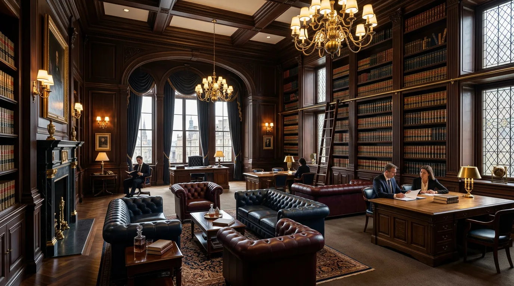
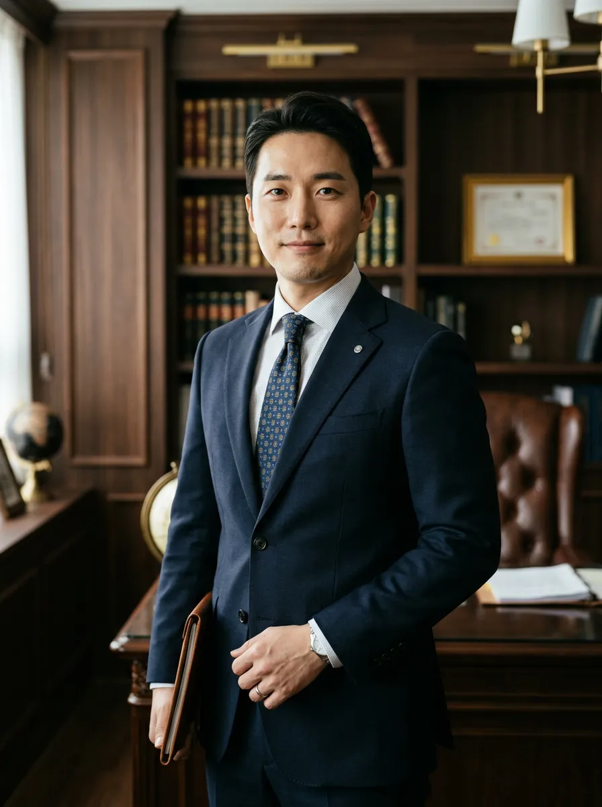
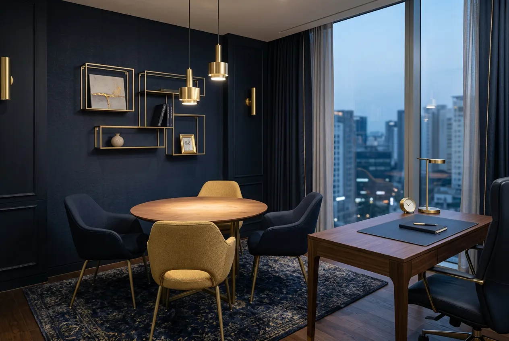
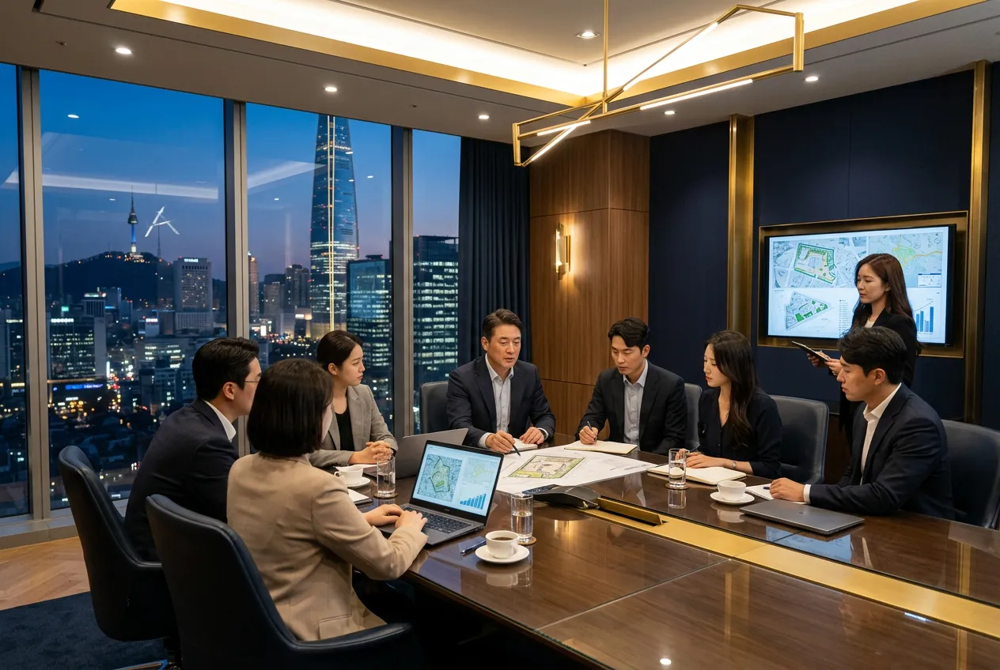
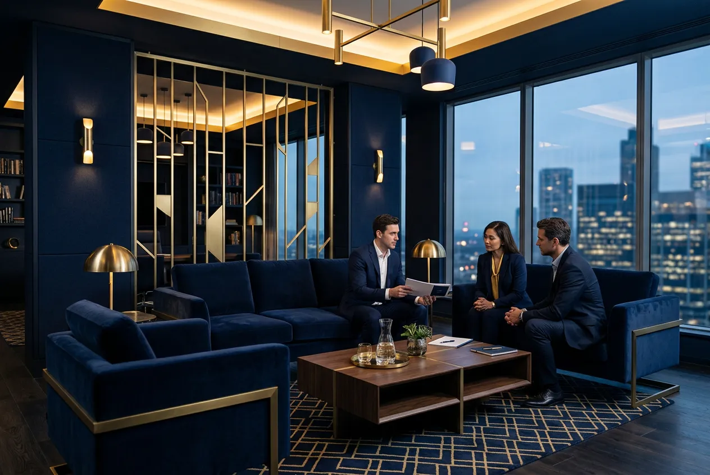

Our Philosophy
법률이 아닌,
사람을 변호합니다
레가토는 사건이 아닌 의뢰인의 삶 전체를 봅니다.
모든 전략은 당신의 일상 회복에서 시작됩니다.
의뢰인 중심 전략
승소가 아닌 의뢰인의 최선의 결과를 설계합니다.
37년의 판례 연구
축적된 데이터와 경험이 전략의 근거가 됩니다.
끝까지 함께
소송 종료 후에도 법률 자문을 이어갑니다.
Practice Areas
당신의 사건에 맞는
정확한 전문가
다섯 가지 핵심 분야, 각 분야 10년 이상의
전문 변호사가 직접 수임합니다.
기업법무
Corporate Law
M&A 자문, 기업 구조조정, 주주간 분쟁, 이사 책임 소송까지. 대기업부터 스타트업까지 기업의 전 생애주기를 법률로 설계합니다. 120여 건의 기업 고문 계약이 실력을 증명합니다.
지식재산·특허
IP / Patent
특허 출원·침해 소송, 상표·디자인권 보호, 영업비밀 분쟁. 기술 스타트업과 제조 기업의 핵심 자산을 법적으로 보호합니다. 연간 200건 이상의 IP 사건을 처리합니다.
노동·해고 분쟁
Labor Disputes
부당해고 구제, 임금체불 소송, 직장 내 괴롭힘, 산재 보상. 근로자의 권리를 최우선으로 보호하며, 기업 측 노무관리 자문도 병행합니다. 부당해고 구제 승소율 91%.
부동산·건설
Real Estate
재개발·재건축 분쟁, 시공사 하자 소송, 임대차 분쟁, 부동산 거래 자문. 복잡한 권리관계를 명확히 정리하고, 분쟁 발생 시 신속한 가처분으로 피해를 최소화합니다.
형사변호
Criminal Defense
사기, 횡령, 배임, 폭행, 교통사고 등 전 범죄 유형 대응. 수사 단계부터 재판까지 전 과정을 밀착 변호하며, 24시간 긴급 체포 대응 시스템을 운영합니다.
Our Attorneys
결과로 말하는
변호사들

박준혁
대표 변호사 · Managing Partner
서울대 법학전문대학원 졸업
대한변호사협회 기업법무 위원장
기업법무 · M&A · 주주분쟁
이서연
수석 변호사 · Senior Partner
고려대 법학전문대학원 졸업
前 대검찰청 특수부 검사
형사변호 · 금융범죄 · 사기
김도현
파트너 변호사 · Partner
연세대 법학전문대학원 졸업
지식재산권 전문 변호사 인증
지식재산 · 특허소송 · IP전략
Track Record
숫자가 증명하는 신뢰
0
승소율
0
누적 의뢰
0
평균 해결기간
0
기업 고문 계약
Client Voices
의뢰인이 직접
전하는 이야기
“모든 것이 끝났다고 생각했던 순간,
레가토가 길을 만들어 주었습니다.”
김OO 대표
IT 스타트업 · M&A 분쟁 해결
“부당해고 통보를 받고 막막했는데, 레가토 덕분에 복직은 물론 밀린 임금까지 전액 돌려받았습니다. 사건 진행 중 매주 경과를 공유해 주셔서 불안감 없이 기다릴 수 있었습니다.”
이OO 과장
제조업 · 부당해고 구제
“특허 침해 소송에서 완전 승소했습니다. 기술적인 내용을 비전문가도 이해할 수 있게 정리해 주시는 능력이 인상적이었고, 전략적 접근이 결과를 만들었다고 확신합니다.”
최OO CTO
바이오테크 · 특허 침해 소송
Process
상담부터 해결까지,
명확한 5단계
초기 상담
30분 무료
사건의 전체 맥락을 파악하고, 법적 쟁점을 정리합니다. 의뢰인의 목표와 상황을 명확히 이해하는 것이 첫 번째 단계입니다.

사건 분석
관련 판례, 법률, 증거를 종합적으로 분석합니다. 상대측의 예상 전략까지 시뮬레이션하여 약점과 강점을 도출합니다.
전략 수립
분석 결과를 바탕으로 최적의 법률 전략을 설계합니다. 소송, 조정, 중재 등 다양한 해결 경로를 비교하여 가장 효율적인 방법을 제안합니다.

소송 대리
법정에서 의뢰인을 대리하여 주장과 증거를 개진합니다. 매 기일 전 충분한 사전 준비와 사후 보고를 통해 진행 상황을 투명하게 공유합니다.
결과 도출
최종 판결 또는 합의를 도출하고, 이후 집행까지 책임집니다. 사건 종료 후에도 후속 법률 자문을 제공하여 의뢰인의 권리를 지속적으로 보호합니다.

“정의는 조용히,
그러나 반드시 실현됩니다”
— 레가토 법률사무소
첫 30분 상담은 무료입니다. 이후 심층 법률 자문이 필요한 경우, 사건의 복잡도와 예상 소요 시간에 따라 비용을 안내드립니다. 모든 비용은 상담 시 투명하게 고지됩니다.
착수금 + 성공보수 구조를 기본으로 합니다. 사건 유형에 따라 시간제(Hourly), 건별 정액제(Flat Fee), 또는 리테이너(Retainer) 방식도 가능합니다. 의뢰인의 상황에 맞춰 유연하게 설계합니다.
변호사법 제26조에 의거, 상담 과정에서 알게 된 모든 정보는 철저히 비밀이 보장됩니다. 수임 여부와 관계없이 상담 내용은 외부에 공개되지 않으며, 내부 보안 시스템을 통해 자료를 관리합니다.
사건의 유형과 복잡도에 따라 다르지만, 평균적으로 47일 이내에 1차 결과를 도출합니다. 긴급 사건의 경우 가처분 신청 등을 통해 신속한 대응이 가능하며, 매 단계별 예상 일정을 사전 안내드립니다.
24시간 긴급 법률 상담 핫라인(02-3478-9900)을 운영합니다. 긴급 체포, 구속 상황 등 즉각적인 법률 대응이 필요한 경우 야간·주말에도 변호사가 직접 출동합니다.
Contact Us
지금, 첫 상담을
시작하세요
서초동 법조타운에서 30분 무료 상담을 진행합니다.
24시간 긴급 법률 상담 가능.
서울특별시 서초구 서초대로 248
레가토빌딩 12층
평일 09:00 — 18:00
긴급 상담 24시간
contact@legato-law.co.kr
FAX 02-3478-9901